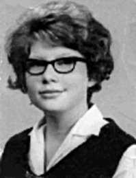
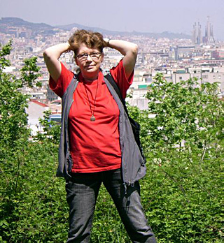

Gratulerer med 60-årsdagen, Gerd!
Gerd 60 år 4. januar 2007? Jeg kan nesten ikke tro det. Nesten enda mindre kan jeg tro at det var så lenge siden som 28. desember 1963 at vi “ble sammen” som det jo heter.
Noen ganger synes jeg jo at det var som i går at jeg banket på døra til familien Rausandhaug i Rausand i Romsdal, og på ekte kristiansundsk spurte en temmelig overrasket framtidig svigermor:
– E ho Gerd hjæm?
Jeg visste da vel ikke at den lokale skikken var at jeg skulle ha stått nede på veien og plystret i håp om respons? Forresten har jeg aldri kunnet det med å plystre.
Uansett var jo Gerd hjemme. Vi kjente hverandre litt fra før, og hun hadde ingen særlige problemer med å klyve inn i bilen til meg og min fetter Reidar og bli med på en kjøretur blant annet med det formål å få med ei av venninnene sine slik at vi ble to par.
Hva det skulle bli begynnelsen på, det ante vel ingen av oss akkurat der og da, men slik er i hvert fall tilfeldighetenes merkelige spill at ikke stort mer enn et halvt år senere var vi gift. Da var hun sytten og jeg nitten år gammel.

Gerd da hun var 17 år gammel.
Spådommene om et kortvarig ekteskap manglet ikke, men der har vi vel etter hvert grundig bevist hvor feil de tok?
Først og fremst hadde jeg oppdaget temmelig fort at dette var ei jente med meninger og bein i nesa. Vi var slett ikke uenige om så mye, men vi hadde enda før vi ble “sammen” hatt et tilløp til krangel om den relativt nylig avdøde amerikanske presidenten, John F. Kennedy, som jeg nok aldri hadde vært noen stor beundrer av.
At hun var ei tøff jente, det lærte jeg fort. Vi mistet det første barnet vårt – og motsatt av det kanskje enkelte hadde trodd sveiset sorgen over det oss bare enda mer sammen. 12. januar 1966 fikk vi endelig ei nydelig lita datter som vi kalte Vanja.
Livet tok omtrent på denne tida ei ny og litt vanskelig vending ved at mitt arbeid som symaskinreparatør opphørte etter som butikken som gav meg det levebrødet gikk konkurs. Vi måtte flytte fra Sunndalsøra, og veien gikk til ei temmelig sliten gammel leilighet i Dalegata i Kristiansund.
Vi sto der fullstendig på bar bakke. Vi hadde leilighet, men ingen ting å betale den med. Jeg hadde så smått begynt å skrive, men det var mest totalt uselgelig lyrikk og nesten like uselgelige korte noveller.
Vi begav oss begge ut “i verden” på jakt etter jobb, med den avtalen at den første som fikk skulle ta den, og den andre være hjemme. Slik gikk det at Gerd fikk jobb temmelig fort på Berserk Fabrikker, mens jeg derimot ble hjemmeværende husfar med en ørliten forfatterspire i magen.
I det røde året 1968 fikk vi vårt andre barn, enda ei flott lita jente som vi kalte for Toini.
Det hendte nok at naboer og andre så med en viss misbilligelse på bruddet med tilvante kjønnsroller når jeg gikk tur med Vanja i sportsvogna og Toini på nakken … men det satte for en opprører som meg bare en ekstra spiss på det hele.
For å gjøre ei lang og vanskelig historie kort så var vår vei nå på sett og vis lagt. Krokete og kronglete og med noen temmelig bratte motbakker særlig økonomisk, men sammen følte vi vel begge at vi kunne både motstå og greie det meste, sjøl om ungene var mye sjuke på denne tida, og min egen helse heller ikke var stort å skryte av.
Politisk aktivitet truet med å stjele mye tid og jeg kom etterhvert til en korsvei der jeg måtte velge mellom det og skrivinga. I grunnen ble det valget ganske lett.
Vi flyttet inn i blokkleilighet, et temmelig stort framskritt, ved at vi nå fikk badekar og varmt og kaldt vann og alt der var rent og pent og nytt og ikke falleferdig og slitt og helsefarlig som i leiegården i Dalegata.
Faktisk var det helserådet som hjalp oss slik at vi ble flyttet fram i boligbyggelagskøen. Straks vi hadde flyttet ut ble golvet i vår gamle leilighet i første etasje revet opp, og det synet som møtte de som gjorde det var sjokkerende! Ei ødelagt kloakkrør gikk under det uisolerte golvet og både synet og lukta var temmelig ubeskrivelig.

Gerd i Barcelona.
I ny leilighet og med lysere tider i hjertet sendte jeg i 1974 uten særlig stort håp inn en bunke noveller til Gyldendal Norsk Forlag. Da hadde jeg allerede hatt en god del på trykk både i lokalavisa Tidens Krav og i Terje Wanbergs blad NOVA. Jeg hadde til og med vunnet en pris for novella “Planetfall”.
Gerd hadde allerede for ei stund siden byttet arbeid, og jobbet som vaskehjelp på sjukehuset. Men hun ville ikke stanse der. Hun tok kurs i maskinskriving og fikk topp karakter. Dermed begynte hun å arbeide på kontoret ved Røntgenavdelinga på sjukehuset.
Etter det jeg syntes var nesten uoverkommelig lang tid fikk jeg svar fra Gyldendal, med beskjed om at novellesamlinga mi “selvfølgelig” var antatt til utgivelse, men at det ville ta en stund før den kunne komme ut.
Novellesamlinga Dimensjon S kom ut våren 1975, og endelig kjente jeg meg som en “riktig” forfatter.
Samtidig visste jeg naturligvis at den tida jeg hadde kunnet bruke på å skrive hadde jeg egentlig fått av Gerd. Uten hennes styrke og vilje hadde ikke mitt forfatterskap vært mulig som noe annet enn i beste fall en hobby.
Nå kunne jeg for første gang på temmelig lenge også komme med et brukbart økonomisk tilskudd til vår felles økonomi. Det var ikke bare en seier over alle de negative kommentarene og den hoderistende misbilligelsen som hadde blitt både meg og oss til del de siste fire-fem åra, det var bare begynnelsen på det jeg håpet skulle komme av skriving og utgivelser …
Når jeg nå sitter her og ser meg tilbake i år 2007 kjenner jeg meg umåtelig rik. Ikke på penger, nei slett ikke. Det vi har hatt, har vi likevel brukt ganske fornuftig. Vi sitter her i et rekkehus i fine omgivelser, temmelig gjeldfrie. Gerd arbeider fremdeles på sjukehuset, jeg har skrevet 27 bøker og har ikke planer om å gi meg helt ennå.
Våre døtre har greid seg godt, de også. Vanja har god og fast jobb og familie, Toini er også vel etablert med arbeid, ekteskap og en kunstnerisk karriere som leder og vokalist i bandene Toini & the Tomcats og Rio Bravo.
Vi har barnebarna Ronja og Audun som også gir oss mye glede. Men først og fremst er det rikdommen at vi har hatt hverandre, Gerd og jeg.
Hun er altså seksti år i dag.
I 43 av de åra har vi vært sammen. I storm og stille. I 1973 skrev jeg dette lille verset for å uttrykke følelser med få ord som sier mer enn mange:
*det er så godt
å føle slik styrke
det er godt
å kjenne sin vei
slik vi sitter sammen
og har hverandre
Vanja og Toini
Gerd og jeg*